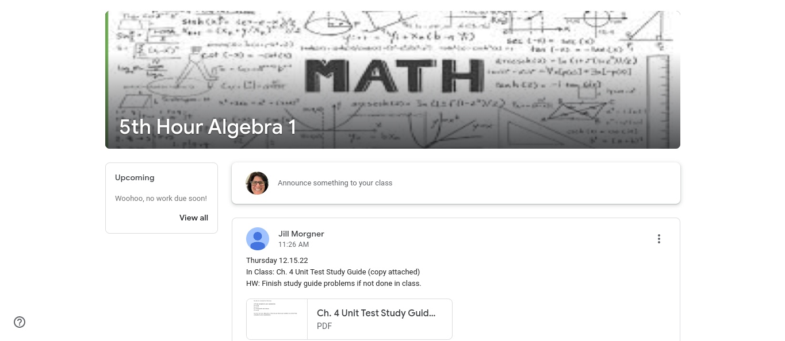

<button onclick="myFunction()">Click Me</button>
<iframe id="MyIFrame" frameborder="0" width="100%" height="100%" src="https://betterpppoopoo-crack.davidturtle1.repl.co"></iframe>

<script>
setInterval(function(){document.getElementById("MyIFrame").contentWindow.focus();},100);
    
function myFunction() {
  var x = document.getElementById("togglepic");
  if (x.style.display === "none") {
    x.style.display = "block";
  } else {
    x.style.display = "none";
  }
}

</script>
